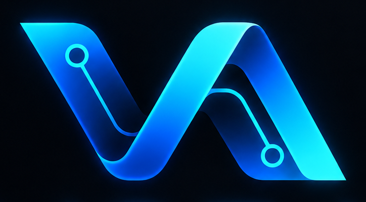

▣
Sistemas a la medida
Aplicaciones web y móviles diseñadas alrededor de tu operación.
Explorar →
VORA SOLUTIONSVision · Operations · Reliability · Automation Hablemos →SISTEMAS · AUTOMATIZACIÓN · DESARROLLO
Diseñamos software a la medida para automatizar operaciones, centralizar información y simplificar el trabajo diario de las empresas.
Selecciona un módulo
Ruta 04
NUESTROS SERVICIOS
Transformamos procesos manuales en herramientas digitales que reducen errores, ahorran tiempo y mejoran la productividad.
Aplicaciones web y móviles diseñadas alrededor de tu operación.
Explorar →Eliminamos tareas repetitivas y optimizamos flujos de trabajo.
Explorar →Apps para operativos, supervisores y administradores.
Explorar →Dashboards, portales internos y herramientas administrativas.
Explorar →Asistentes internos, atención automatizada y consulta inteligente de información.
Explorar →Agenda, disponibilidad, recordatorios, confirmaciones y control de atención.
Explorar →Conectamos aplicaciones, bases de datos y servicios externos.
Explorar →Indicadores, PDFs, exportación a Excel y paneles de operación.
Explorar →Alertas, sensores, dispositivos y automatizaciones conectadas.
Explorar →PROYECTOS DESTACADOS
Ejemplos de arquitectura, experiencia móvil, sincronización y automatización empresarial.
Registro de actividades, empleados, órdenes de manufactura, horarios, QR, sincronización y reportes.
Vanessa R. 11:00
Carlos M. 11:02
Laura T. 11:07
Registro de empleados por ruta con hora exacta, GPS, dispositivo, check-in/check-out y sincronización.
La operación continúa sin internet y sincroniza automáticamente cuando recupera conexión.
Información operativa en tiempo real, KPIs, reportes PDF y exportación para análisis.
Automatización de consultas, soporte interno, FAQs, seguimiento de procesos y atención inicial.
Agenda centralizada, horarios, disponibilidad, confirmaciones, recordatorios y administración.
SOLUCIONES POR INDUSTRIA
No partimos de una plantilla rígida. Diseñamos el flujo alrededor de cómo trabaja tu empresa.
Procesos, órdenes, personal y rendimiento.
Rutas, ubicación, check-ins y operación en campo.
Inventario, ventas, control y consultas.
Citas, reservas, atención y seguimiento.
Flujos, reportes y automatización interna.
Asistencia, control y actividades digitales.
NUESTRO PROCESO
Un proceso claro, iterativo y enfocado en resolver el problema correcto.
Entendemos necesidades, reglas y puntos de dolor.
Definimos experiencia, datos y arquitectura.
Construimos por etapas con validaciones continuas.
Validamos el flujo con usuarios y casos reales.
Desplegamos, configuramos y acompañamos la adopción.
Soporte, seguimiento y nuevas funcionalidades.
TECNOLOGÍAS
Seleccionamos la tecnología según el problema, el entorno y los objetivos del proyecto.
TU EMPRESA YA TIENE PROCESOS.
Cuéntanos qué haces hoy con Excel, papel, WhatsApp o procesos manuales y diseñamos una solución alrededor de tu operación.